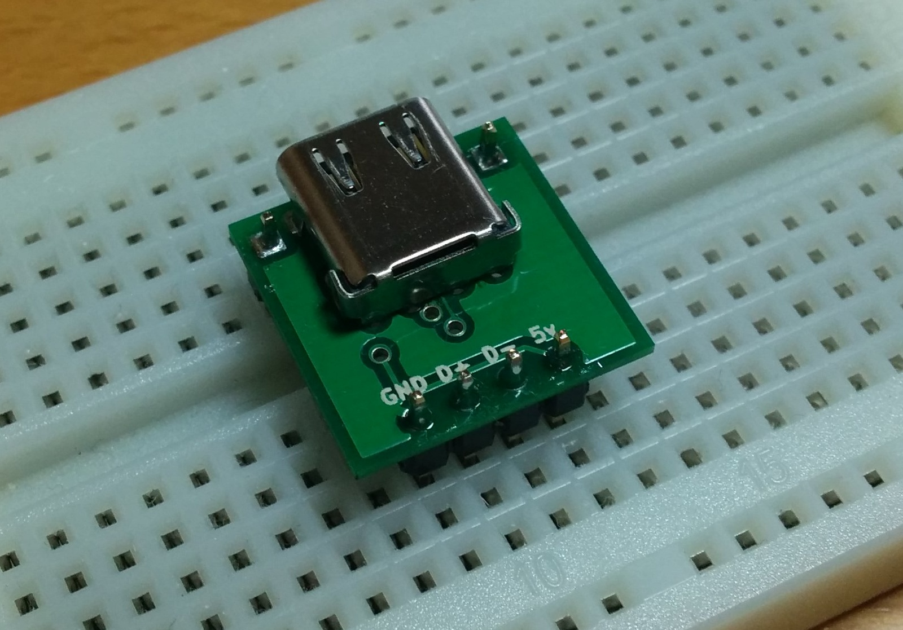
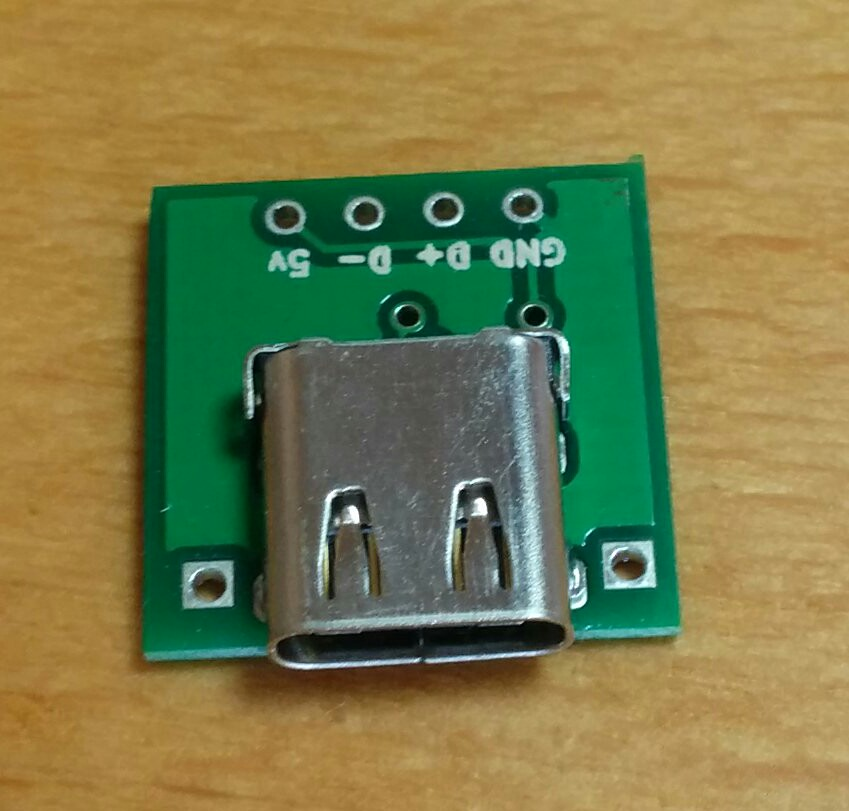
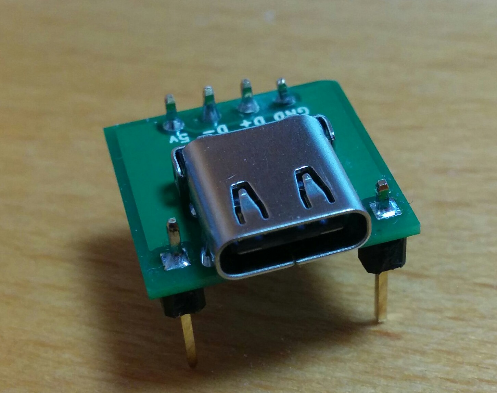
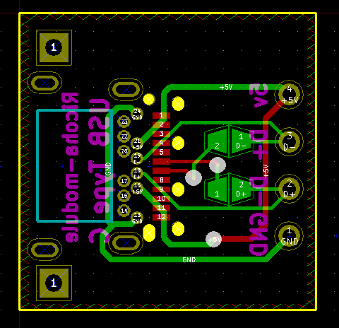
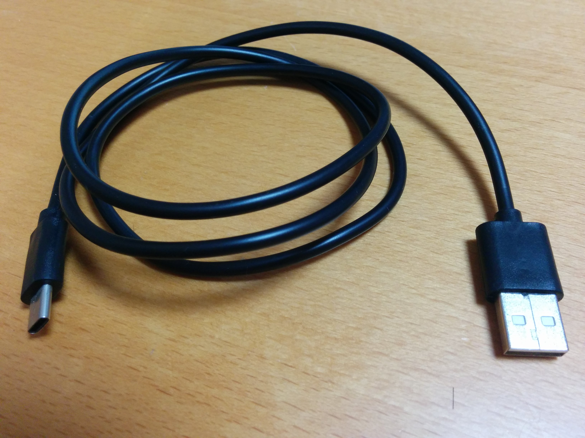

USB Type C変換基板#  なにができるの？# USB Type CのソケットからUSB2.0で使われるピンをブレットボードなどで使いやすい2.54mmピッチに変換する基板です。 ピンソケットをつけない場合  ピンソケットをつけた場合  仕様# 接続端子 USB Type C サイズ(㎜) 15×15 設計情報# 回路図 配線図  USB type Cケーブル# Type A to Type CタイプのUSB2.0ケーブル、長さ100cmのケーブルです。 